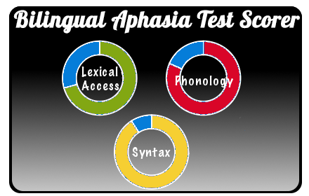

Install Me in Chrome
Twenty years ago we had two applications to score the BAT (Bilingual Aphasia Test), the PCBAT and the MacBAT, in 2012 we got together with Dr. Paradis at McGill and decided to make a web-based BAT scorer, that will run on any computer, anywhere. You can use this scorer to get a patient profile in 3 steps: